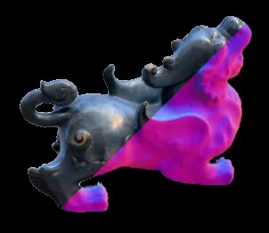
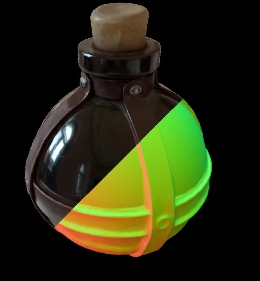
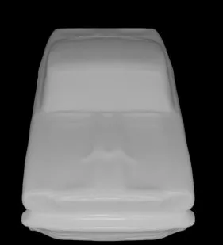
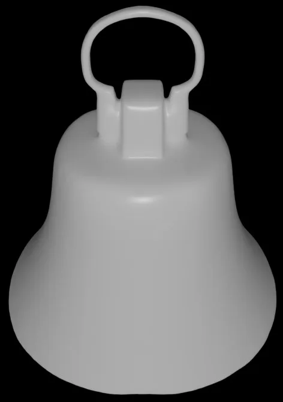
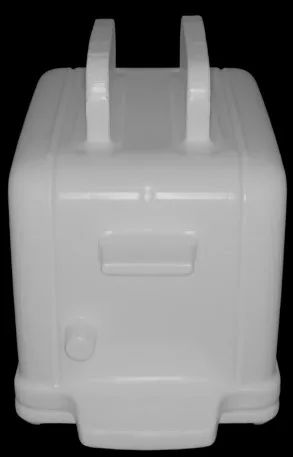

GS-ROR²：面向反射物体重光照与重建的 3DGS/SDF 双向引导GS-ROR$^2$: Bidirectional-guided 3DGS and SDF for Reflective Object Relighting and Reconstruction
对 3DGS-SLAM 后端的几何一致性和 mesh 化有参考价值，尤其覆盖反射/高光退化场景。
一句话工作总结
用 3DGS 与 SDF 双向约束补足反射物体下的几何、法向和重光照能力。
摘要
该工作用 SDF 约束 3DGS 的深度和法向，避免昂贵的 SDF 体渲染；同时用 Gaussian blended normal 反向细化 SDF，并通过 SDF-aware pruning 去除 floater。目标是在反射物体上同时获得高效渲染、合理法向、真实 relighting 和更高质量 mesh。
3D Gaussian Splatting (3DGS) has shown a powerful capability for novel view synthesis due to its detailed expressive ability and highly efficient rendering speed. Unfortunately, creating relightable 3D assets and reconstructing faithful geometry with 3DGS is still problematic, particularly for reflective objects, as its discontinuous representation raises difficulties in constraining geometries. Volumetric signed distance field (SDF) methods provide robust geometry reconstruction, while the expensive ray marching hinders its real-time application and slows the training. Besides, these methods struggle to capture sharp geometric details. To this end, we propose to guide 3DGS and SDF bidirectionally in a complementary manner, including an SDF-aided Gaussian splatting for efficient optimization of the relighting model and a GS-guided SDF enhancement for high-quality geometry reconstruction. At the core of our SDF-aided Gaussian splatting is the mutual supervision of the depth and normal between blended Gaussians and SDF, which avoids the expensive volume rendering of SDF. Thanks to this mutual supervision, the learned blended Gaussians are well-constrained with a minimal time cost. As the Gaussians are rendered in a deferred shading mode, the alpha-blended Gaussians are smooth, while individual Gaussians may still be outliers, yielding floater artifacts. Therefore, we introduce an SDF-aware pruning strategy to remove Gaussian outliers located distant from the surface defined by SDF, avoiding floater issue. This way, our GS framework provides reasonable normal and achieves realistic relighting, while the mesh from depth is still problematic. Therefore, we design a GS-guided SDF refinement, which utilizes the blended normal from Gaussians to finetune SDF. With this enhancement, our method can further provide high-quality meshes for reflective objects at the cost of 17% extra training time.
中文解读摘录
- 日期：2026-06-03
- 链接：arXiv / PDF
- 作者：Zuo-Liang Zhu, Beibei Wang, Jian Yang
- 领域标签：3DGS / SDF / 反射物体重建 / relighting / mesh
- 背景/动机：3DGS 渲染效率高，但表示不连续，几何约束弱；反射物体下 normal、depth 和 mesh 更难稳定。SDF 几何更稳，但 ray marching 训练和渲染成本高。
- 主要创新点/工作：用 SDF 辅助 Gaussian splatting 的 depth/normal 监督，避免昂贵 SDF volume rendering；再用 Gaussian blended normal 反向细化 SDF；同时引入 SDF-aware pruning 去除远离表面的 floater。
- 为什么值得关注：这类 3DGS+SDF 混合表示对 3DGS-SLAM 后端很关键：既保留实时渲染，又补上几何/法向/mesh 质量。反射物体虽然偏资产重建，但问题本身也是室内/工业 SLAM 的常见退化场景。
图表/页面预览

{kind=link}

{kind=link}

{kind=link}

{kind=link}

{kind=link}
